Start
RV Car Studio makes and changes cars for Re-Volt and RVGL. You work on the car in the 3D view, and everything you change shows at once. It covers the whole way: models, paint, shading, collision, handling, menu entry, carbox, readme and the zip you share.
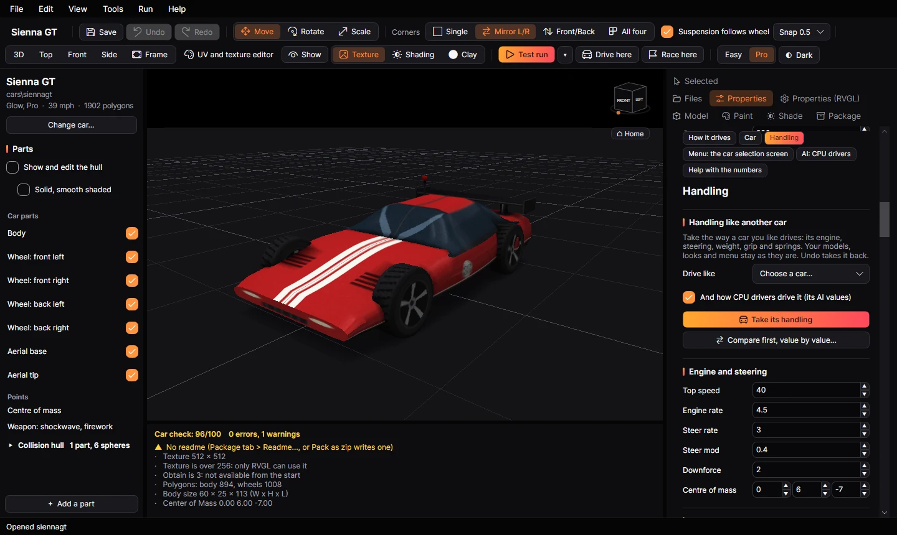
Installing
| System | How |
|---|---|
| Windows (64-bit) | Unzip RvCarStudio-…-win-x64.zip anywhere and run RvCarStudio.exe. It isn't signed, so Windows may ask before it runs the first time. |
| Linux (64-bit) | tar -xzf RvCarStudio-…-linux-x64.tar.gz, then run ./RvCarStudio inside. It needs X11 (or XWayland), OpenGL and fontconfig, which a desktop has. |
| macOS | No download yet: it builds, but hasn't been tested on a Mac. |
No .NET is needed. The first start asks for your game's folder: the one that holds cars. File > Open Re-Volt folder changes it.
The first minutes
- Pick a car in the list. It opens and stays open until you choose Change car (Ctrl+O).
- Click a part of the car. Its values are on the Selected tab; drag the handles in the view to move it.
- Try a colour on Paint, drive it with F6, undo with Ctrl+Z.
- Ctrl+S saves. Nothing is written before that, except by the buttons that say so.
Tours
Help > Tours has three: make a new car, remodel a car, repaint a car. A card tells you each step and points at what to click. Do it for me does the step, and the tour goes on when you've done it.
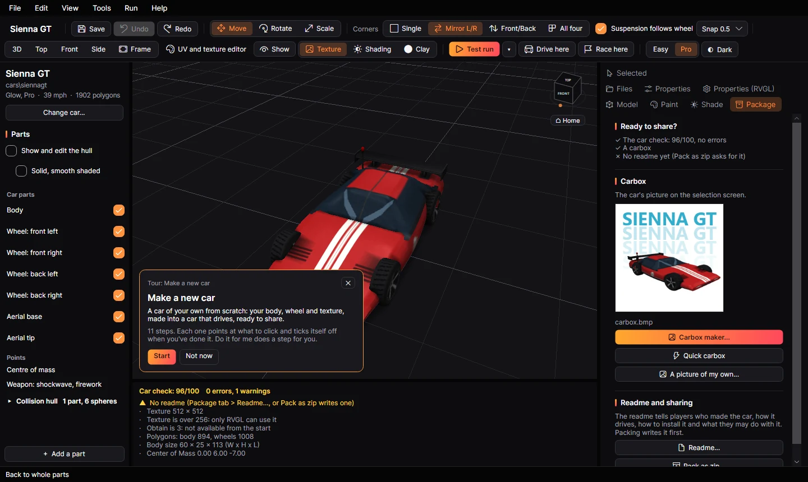
Pro and Easy
The switch is on the top bar, and the choice is remembered. The Studio starts in Pro.
Pro has every tab, the model slots, parameters.txt as text, menu stats, AI values, vertex normals and RVGL's own values.
Easy has the layout of the old RV Car Studio. The Edit Menu lists its modes in the old order, with < and > to go through them: Main, Texture, Handling, Frontend Stuffs, Body, Wheels, Suspensions, Spinner, Aerial, AI, Camera, Collision, Carbox, Shade, Shadow, Misc., Readme, Packing, About and Console. Click a part in the view and its mode comes up. Pro editor goes back to Pro.
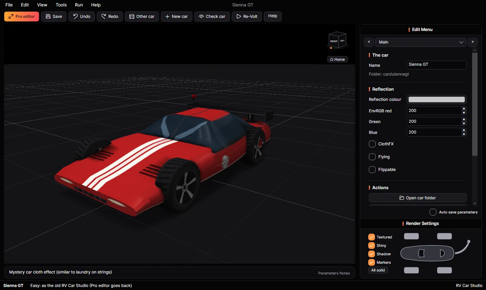
Render Settings
The drawing shows the car from above, its front to the left. Click a part to change how it's drawn: solid, wire, points, not shown, half see-through. Right click selects it. All solid puts everything back. This changes only the view, never the car.
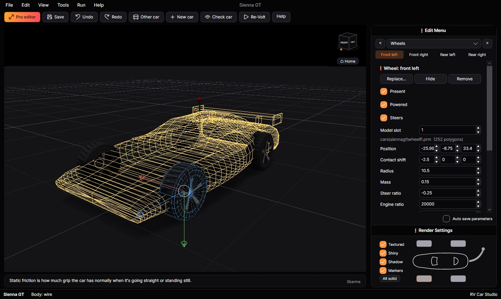
The 3D view
Looking
| Mouse | |
|---|---|
| Right drag, or drag on nothing | turn round the car |
| Middle drag | move sideways |
| Wheel | nearer, farther |
| Click | select a part |
| Double click | select it and frame it |
| Right click | the part's menu |
1 2 3 4 are the 3D, top, front and side views, F frames the car. The cube in the corner turns the view too, and Home goes back to the start. Show on the toolbar switches reflections, shadow, wireframe, hull, suspension travel, vertex normals, markers, grid, soft light and the cube. Texture, Shading and Clay choose what the surface shows.
Moving, turning and sizing
W moves, E turns, R sizes. Drag a handle, or type an amount: W, then X, Y or Z, a number, Enter. Arrow keys and PgUp PgDn nudge, with Shift in bigger steps. Snap sets the step.
Turning and sizing change the model itself, with all its levels of detail, and the radius or length that goes with its size.
| Corners | What moves |
|---|---|
| Single | only this one |
| Mirror L/R | the other side, mirrored |
| Front/Back | the other end, mirrored: changes the wheelbase |
| All four | all corners, mirrored both ways |
The crosses are the centre of mass, the weapon points, the aerial, the cameras and the suspension mounts. They can be dragged too.
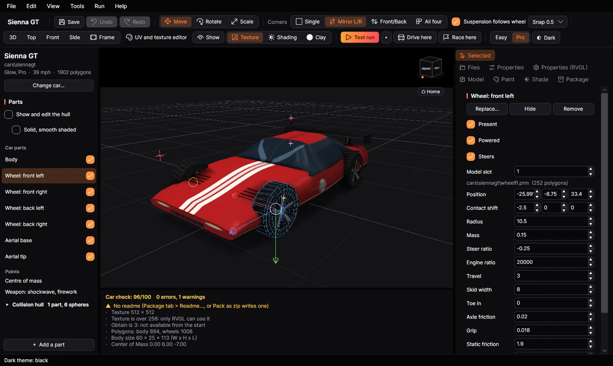
Parts
The list on the left has the car's parts, its points and the collision hull as a row that opens. Add a part adds what the car doesn't have; Replace, Hide and Remove are on the part's own page. Hide only changes the view.
New car
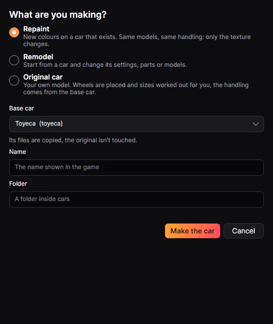
| What you make | What you get |
|---|---|
| Repaint | A copy of a car, opened on Paint. The handling stays. |
| Remodel | A copy of a car whose settings, parts and models you change. |
| Original car | Your own body, one wheel for all four (the right side mirrored) and a texture. The wheels are placed, sizes fitted and a first hull made. The handling comes from the base car. |
Models can be .prm or .obj, the texture .bmp, .png or .jpg. Stock cars come first in the list, and Toyeca is the one it starts from. A file that can't be used is named, with the reason, and the window stays open.
Installing a downloaded car
File > Install a car from a zip or folder, or drop it on the window. First you see what's inside: each car, its folder and what's wrong with it. Nothing that exists is replaced: if the folder's name is taken, the car gets another one and only its own paths are changed. Undo the last install takes out exactly the files it wrote.
Stock cars and shared files
The first change to a stock car offers a copy that keeps what you've done. If you go on with the original, your changes go to packs\local, on top of the game's files. Before a file that other cars use is changed, the Studio asks: your own copy, for all, or cancel.
Files
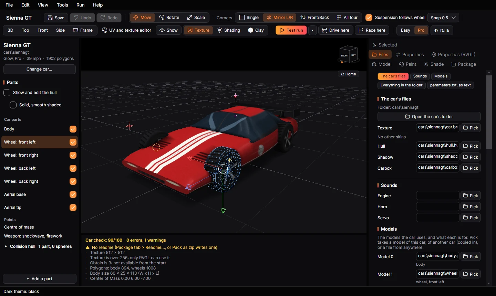
The car's texture, hull, shadow, carbox and sounds, each with Pick. Pick takes a file from anywhere, copies it into the car's folder and turns it into what the game needs. It's picky: a file the game couldn't use is refused, with the reason. In Pro the tab also has the model slots, everything in the folder, and parameters.txt as text. Text you type there reaches the car a moment after you stop.
| File | Takes |
|---|---|
| Texture | .bmp .png .jpg, made into a .bmp |
| Hull | .hul |
| Shadow | .bmp .png |
| Carbox | any picture, fitted into a square |
| Engine, horn, servo | a plain .wav |
| Models | .prm, .m, or .obj from Blender |
Properties
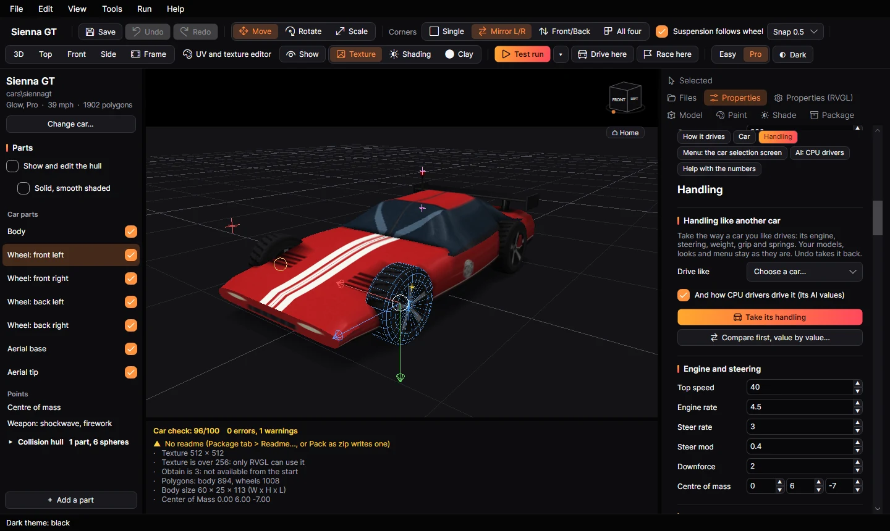
How it drives
At the top of the tab (F1): real top speed, time to top speed, weight, how far the springs sit down, bounce and damping, grip and turning, worked out from the original car physics as you edit. Try it, nothing changes shows what a change would do before you make it. There's a unit converter and a search through what each value does.
Handling like another car
Choose a car whose feel you like. One click takes its engine, steering, weight, grip and springs, and how CPU drivers drive it if you want. Your models, looks and menu stay. Compare first opens the list of every value that differs, to take one by one.
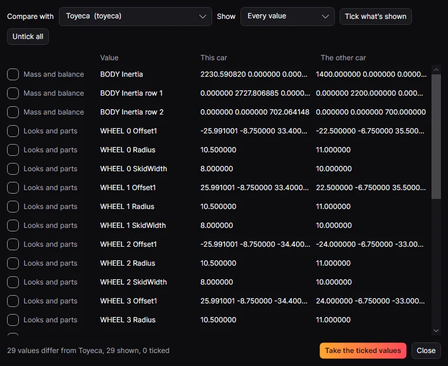
The car and its handling
Name and reflection, engine and steering, centre of mass, the springs, grip, and which wheels drive. A value tells you what it does when the mouse rests on it. The centre of mass can also be worked out: in the middle of the wheels, balanced, by weight, or low and stable.
Menu
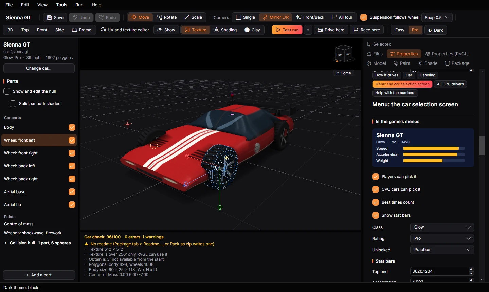
What players see: class, rating, when it's unlocked, and the stat bars. Fill the stat bars from a simulated run measures them. RVGL's own dev mode (Calc Car Stats) has the exact numbers.
AI
How CPU drivers drive the car, with the range of the stock cars beside each value, and Copy the AI values of another car.
Properties (RVGL)
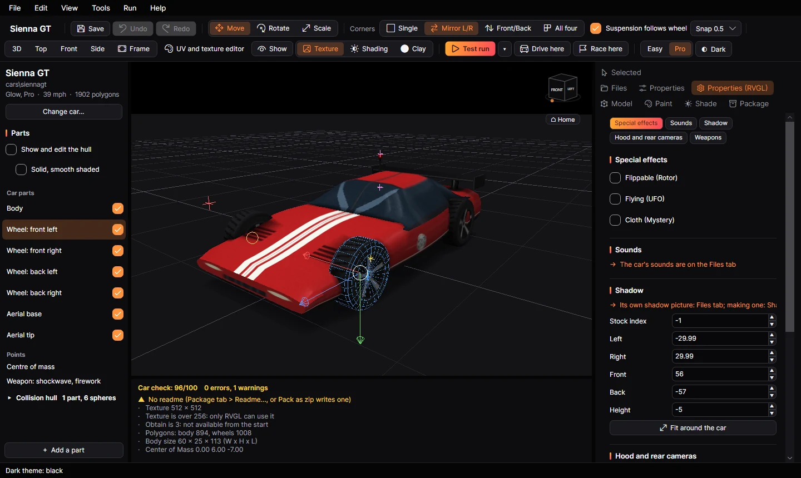
What only RVGL reads: flippable, flying and cloth cars, the shadow's place and stock index, own cameras and the weapon points.
Model
Vertices
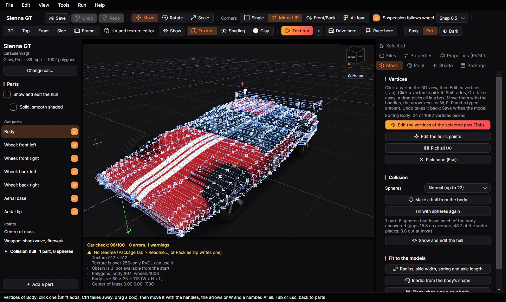
Select a part and press Tab. Click a vertex to pick it, Shift adds, Ctrl takes away, a drag picks all in a box, A picks all. Move them with the handles, the arrows, or W E R and a number. Esc lets go of them, and again leaves vertex editing. The hull's points work the same way and it stays a closed solid.
Collision hull
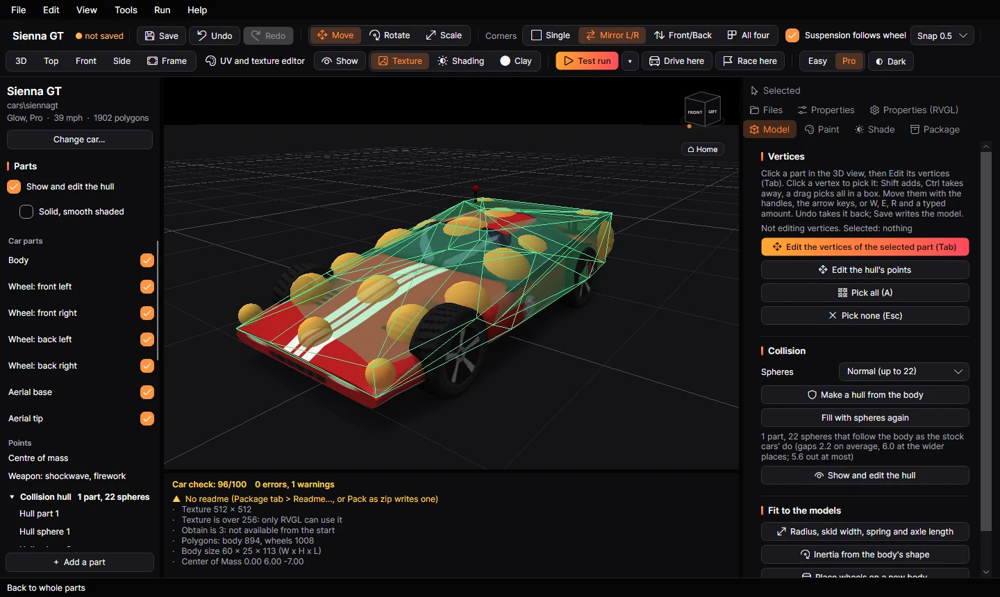
In the game a car has spheres, which touch the world, and convex parts, which other cars bump into. Make a hull from the body makes both: spheres that together have the body's outline, never lower than the road clearance, and a convex part (two, when the body needs them). They needn't be inside the body.
- Spheres: Few (8 to 12), Normal (up to 22) or Fine (up to 34). The stock cars have 10 to 34.
- Fill with spheres again makes only the spheres and leaves your parts.
- The line below says how well they follow the body.
- Every part and sphere can be moved, sized, added or removed. With Mirror L/R the other side follows.
A made hull is a good start. Race it in RVGL before you share the car.
Fitting
Radius, skid width, spring and axle lengths from the models; the inertia from the body's shape; the wheels placed on a new body; the right side made like the left.
.obj and other programs
File exports the selected part or the whole car as .obj and imports one for the selected part. 1 metre there is 100 game units, Y is up and the front is towards -Z, as in Blender's Re-Volt add-on. An imported .obj stays watched: save it again in Blender and the part changes here.
Paint
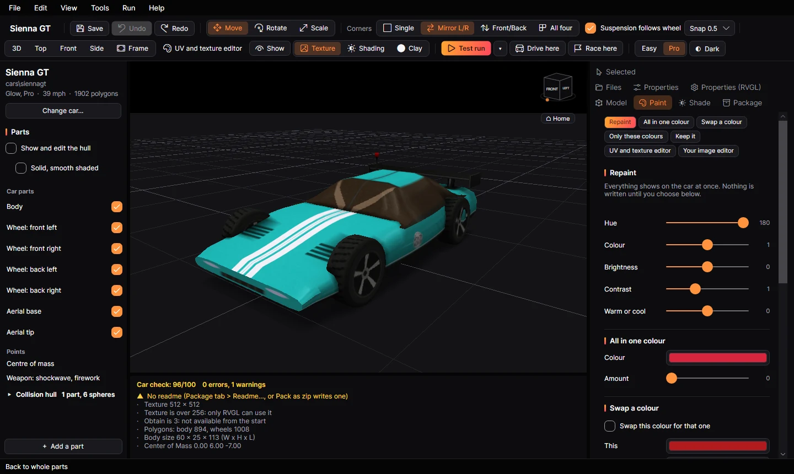
| Section | What it does |
|---|---|
| Repaint | Hue, colour, brightness, contrast, warm or cool |
| All in one colour | Tints everything, keeps the light and dark of the painting. Also for grey textures, where hue has nothing to turn |
| Swap a colour | Replaces one colour with another |
| Only these colours | Click colours of the texture to change only those |
| Keep it | Save as a new skin writes car-alt1.bmp and keeps the original; Change this car's texture writes over it, with the first one as .bak |
| Your image editor | Open the texture and watch it: each save there shows here |
Nothing is written until you use Keep it.
UV and texture editor
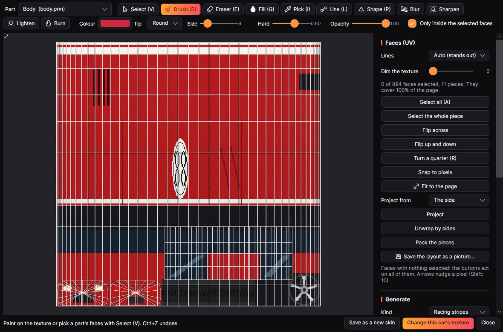
Open it with U. The texture has a part's faces laid over it, and the car in the 3D view follows.
| Tool | Key | |
|---|---|---|
| Select | V | Faces: click, Shift, Ctrl, a box, or double click a whole piece. Move, size, turn, flip, snap, fit, project, unwrap, pack |
| Brush | B | Round or square tip |
| Eraser | E | Brings the original back |
| Fill | G | |
| Pick a colour | I | |
| Line | L | |
| Shape | P | A filled polygon |
| Blur, Sharpen, Lighten, Burn | Painted on with the brush |
Generate makes a plain colour, gradient, racing stripes, checks, carbon fibre, grunge, a number, panel lines, a colour per piece, or light and shade, on the whole page or the selected faces. Make a livery does a whole paint job; again for another one. Save the layout as a picture gives a template for other editors.
Shade
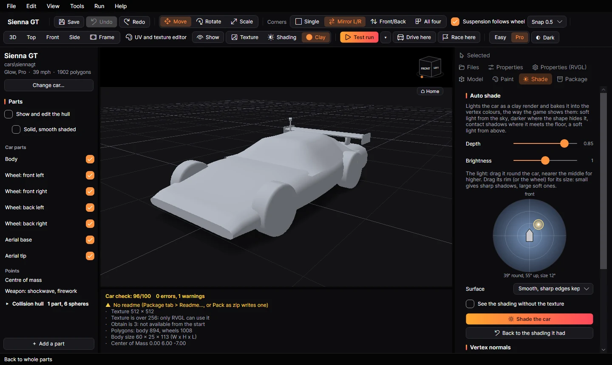
Each polygon holds a colour for each of its corners. Auto shade lights the car like a clay render and bakes that into them: light from the sky, darker where the shape hides it, contact shadows at the floor, and a lamp you drag round the car. Depth says how dark it gets, Surface whether it's smooth or faceted. Sliders show at once, Save keeps it.
Vertex normals (Pro) are separate: the game takes reflections and moving lights from them. Make shadow.bmp draws the shadow under the car from its own shape.
Package
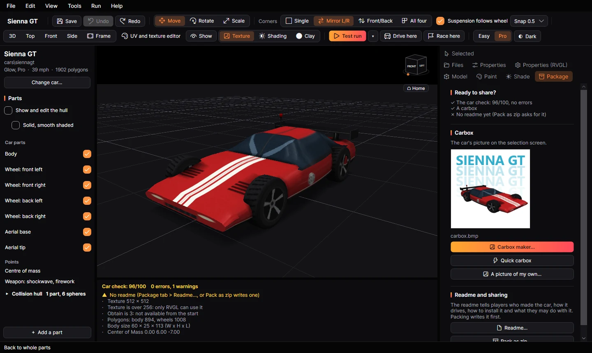
The last step. Ready to share? lists the car check, the carbox, the readme and what's not saved.
Carbox maker
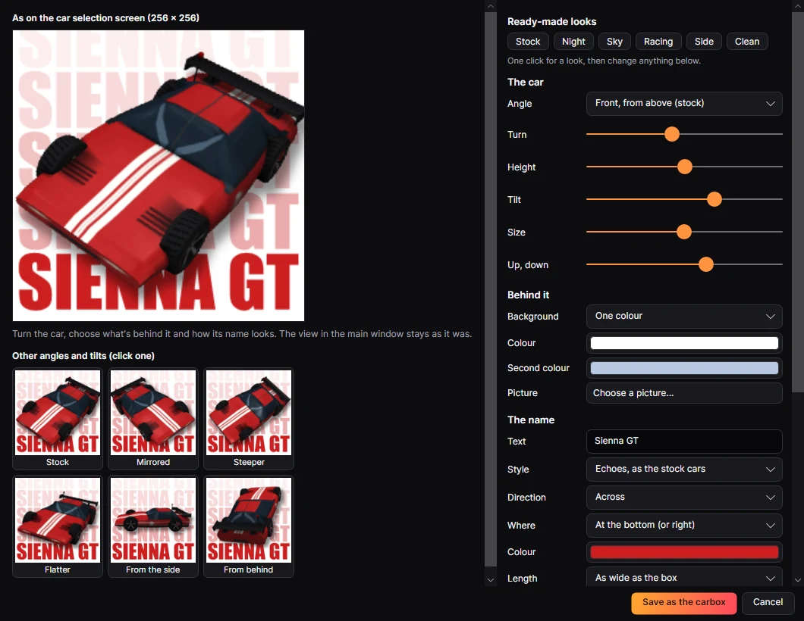
The car is cut out of the view with its soft edges and put on a background with its name.
- Ready-made looks: Stock, Night, Sky, Racing, Side, Clean. One click, then change anything.
- The car: angle, turn, height, tilt, size, up and down.
- Behind it: one colour, two, or a picture.
- The name: style (echoes as the stock cars, plain, outlined), Direction (across, down or up the side, upside down, letters one under the other), Length (as wide as the box by itself), height, width, kerning, slant and place.
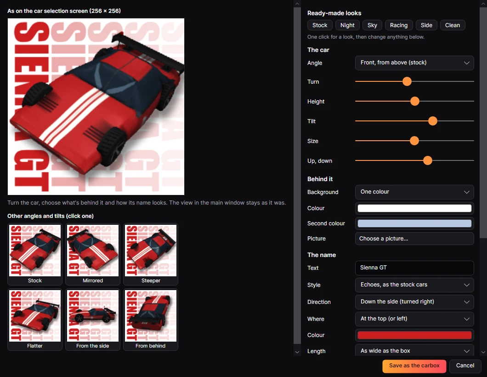
Quick carbox makes the stock look in one click, and A picture of my own takes any picture.
Readme
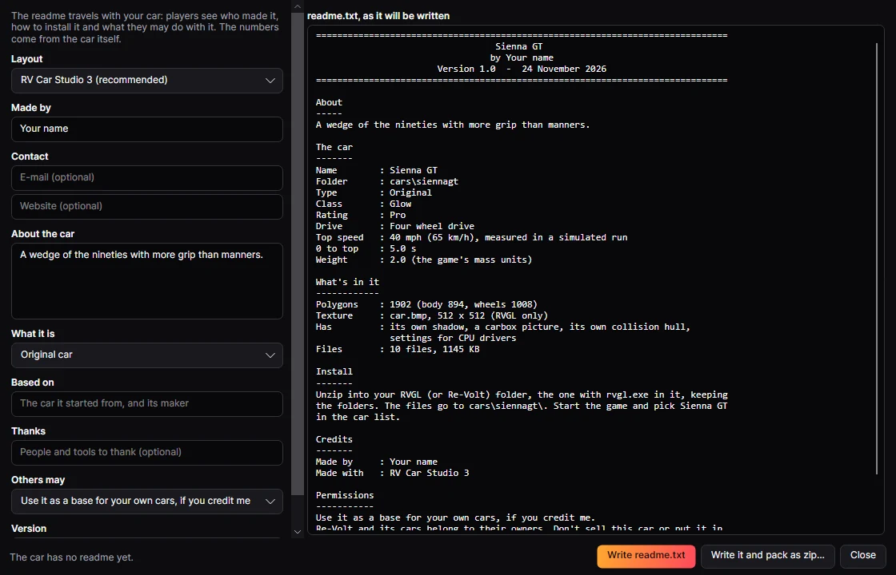
A few answers on the left, the readme as it will be on the right. Speed, weight, polygons and files come from the car. A readme someone else wrote is kept as readme.txt.bak. The layout can also be one of the templates in data\readme, or your own with its [CARNAME], [AUTHOR]… tags.
Zip
Pack as zip saves the car, offers to write the readme, and makes the zip that players unpack on their game folder.
Trying the car
In RVGL
F5 saves the car, starts RVGL in a window and goes into a race with it. The track, laps and opponents are under the arrow beside Test run. It uses a settings folder of its own, so your profile and best times aren't touched. RVGL has no command for this, so the Studio goes through its menus with key presses, only while the game's window is in front, and only on Windows: elsewhere the game starts and you pick the car. Shift+F5 is dev mode: Ctrl+R in the game reloads the car.
Here
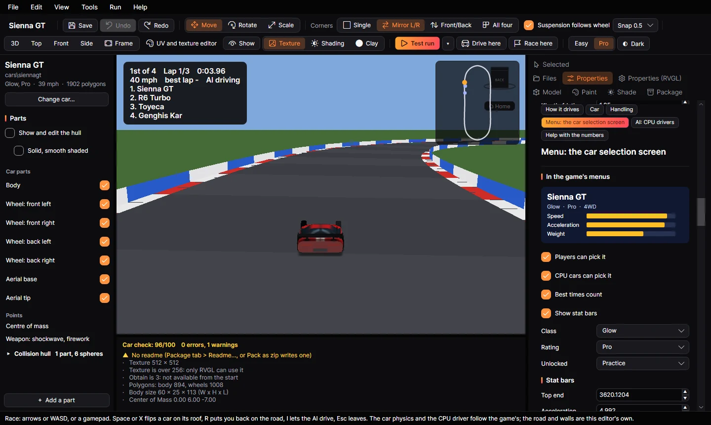
F6 drives on a plain floor, bumps or a ramp. F7 races CPU cars on a built-in road. Both use the physics of the original game. Arrows or W A S D, or a gamepad (Windows); Space flips the car when it's on its roof, R puts it back, I lets the AI drive, Esc leaves. The road, the walls and the CPU driver are the Studio's own, so times don't compare with RVGL's.
The car check
Under the view, always up to date. Errors (a missing file, a damaged model, a texture that isn't square) are things the game would stumble over; warnings (a hull too low, a file in another car's folder) are worth a look; the rest is information.
Saving and safety
- Saving changes only the lines you changed in
parameters.txt. Comments,;)lines, unknown sections and the checksum of stock files stay. - The first version of each file stays next to it as
.bak. - Read-only packs are never written. A stock car's changes go to
packs\local, and File > Back to the game's version takes them away. - Save by itself (File, or Auto save parameters in Easy) saves a few seconds after each change.
- If
parameters.txtis changed in another program, the car is read again (you're asked when you have unsaved changes). - An error inside the Studio doesn't close it. It's written to
crash.logand the Studio goes on.
| System | Settings and crash.log |
|---|---|
| Windows | %APPDATA%\RvCarStudio |
| Linux | ~/.config/RvCarStudio |
Look
Dark, Light and Classic: the button at the end of the toolbar, or View > Theme. Show > Names on the buttons leaves only the symbols.
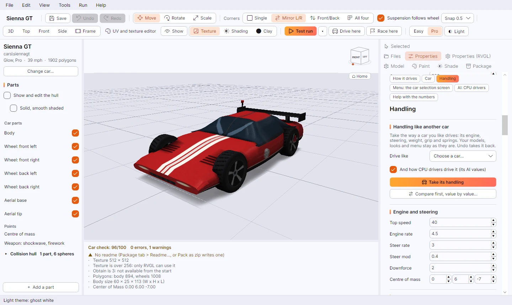
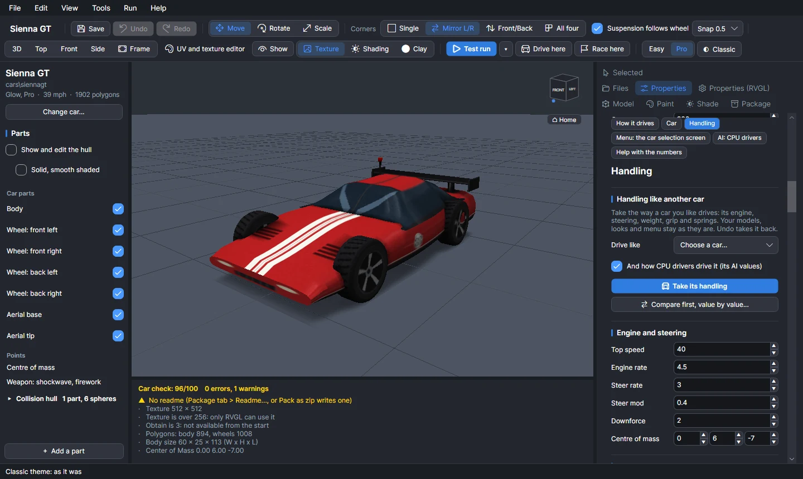
Keys
| Key | What it does |
|---|---|
| Ctrl+S | save |
| Ctrl+Z, Ctrl+Y | undo, redo |
| Ctrl+O | change the car |
| F1 | how it drives, and the guide |
| F5, Shift+F5 | test run in RVGL, in dev mode |
| F6, F7 | drive here, race here |
| W E R | move, turn, size; then an axis and a number |
| Arrows, PgUp PgDn | nudge (Shift: bigger steps) |
| 1 2 3 4 | 3D, top, front, side |
| F | frame the car |
| U | UV and texture editor |
| Tab | vertices of the selected part, and back |
| A, Esc | pick all vertices, none |
Command line
RvCarStudio -rvpath "D:\ReVolt" use this game folder
RvCarStudio -load toyeca open this car
RvCarStudio -config ask for the game folder againIf something doesn't work
| What you see | What to do |
|---|---|
| Hue changes nothing | The texture is nearly grey. Use All in one colour: choose a colour, then raise Amount. |
| The car stops dead on kerbs | The hull is too low. The car check says so; make the hull again. |
| The carbox doesn't show in the game | It needs RVGL, and TCARBOX in parameters.txt: Save as the carbox sets it. |
| Changes to a stock car don't show | RVGL reads the packs in order. The Studio saves to packs\local; it must be listed in packs\default.txt. |
| CPU drivers don't use the car | Turn on CPU cars can pick it. RVGL chooses the opponents itself. |
| Nothing in the 3D view on Linux | OpenGL 3.3 (or ES 3.0) is needed. Check that your graphics driver is installed. |
| Something went wrong message | Send crash.log with what you clicked, in an issue. |
About
RV Car Studio by Kallel A.Y (theKDL). Free software under the GPL v3. The source is on GitHub. Re-Volt is the property of its owners; RVGL is the work of the RVGL team. No game data is included. The car in the pictures is the author's Sienna GT.